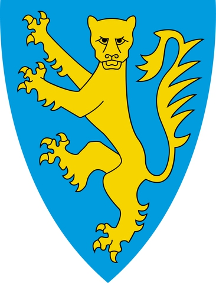

2858424486 Torberg Arnesson av Giske
* omkring 990 Giske, Norge
† omkring 1050 Giske, Norge
Lendmann på Möre
Blev ca 60 år
5716848972 Arne Arnmodson av Giske
* omkring 965 Giske, Norge
† omkring 1024 Giske, Norge
Olav den heliges Lendeman
Blev ca 59 år
11433697944 Arnmod Arnvidsson
* omkring 945 Giske, Norge
† 986 Hjörungavåg, Hareid, Norge
Jarl av Møre
Blev ca 41 år
11433676800 Arnvid Thorarensson
* omkring 913 Møre og Romsdal, Norge
† omkring 1000
Småkonge på Sunnmøre, Jarl på Møre
Blev ca 87 år
22867395889 Erlingsdatter
5716848973 Tora Torsteinsdatter av Galge
* omkring 970 Norge
† omkring 1015 Giske, Norge
Blev ca 45 år
11433697946 Torstein Galge Herse
* omkring 952 Onundfjord, Møre og Romsdal, Norge
† omkring 1016 Giske, Norge
Blev ca 64 år
11433697947 Gunhild Haludonsdatter
* omkring 950 Norge
† omkring 1000 Giske, Norge
Blev ca 50 år